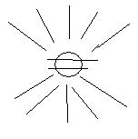

不是超越游戏（电子竞技），也不是网游2.0，而是 超越游戏2.0 ！
1，离线团队合作（Offline Team Work）。相对于实时团队合作（Realtime Team Work）。
2，多付出分支。傻子也能成为游戏高手。（你认为这可能吗？不可能吗？）
3，广义潜规则价值输出。只有真实，才能精彩。（人人网是因为真实，所以精彩，不一样的）
其实，还有很多很多…… 英特纳雄耐尔，就一定要实现……
--------------------------------------分割线--------------------------------------
剑神 Sworchi 有没有人愿意跟我合作的？
http://code.google.com/p/sworchi/
--------------------------------------分割线--------------------------------------
大家说，下面这些东西里，哪些跟游戏有关？
1，中央电视台节目《联合对抗》
2，某上岛咖啡店内的金苹果树装饰
3，

4，秦时明月里的机关城禁地
李剑云 周子洪 1
张龙 马武壮 王义 李行风 孙虎 张成志 陆行 魏子石 234
程云丈 何晓 莫御兰 张青伏 马延 刘远 曲应天 黄月 5
童驷 孟娇羽 颜临 解风 柳归絮 6
邵痕天 ？ 顾萧寻 ？ ？ 7